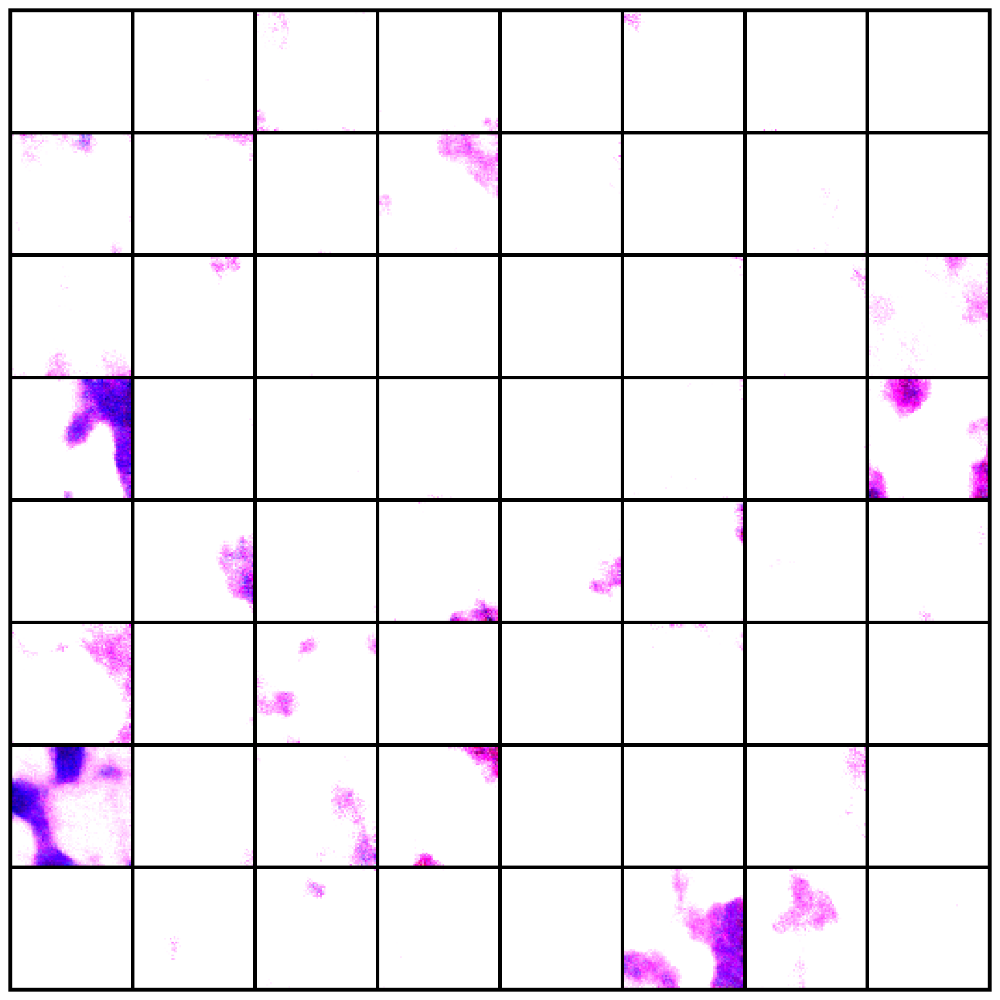
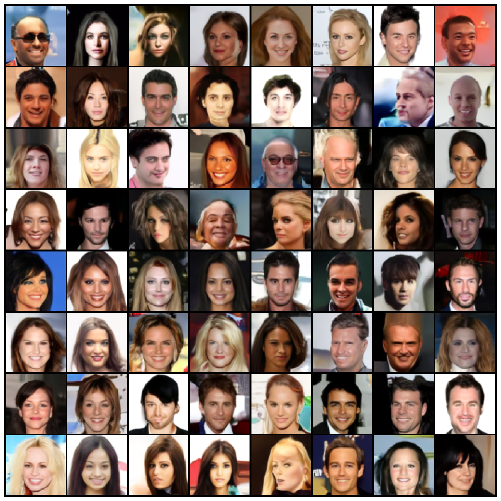
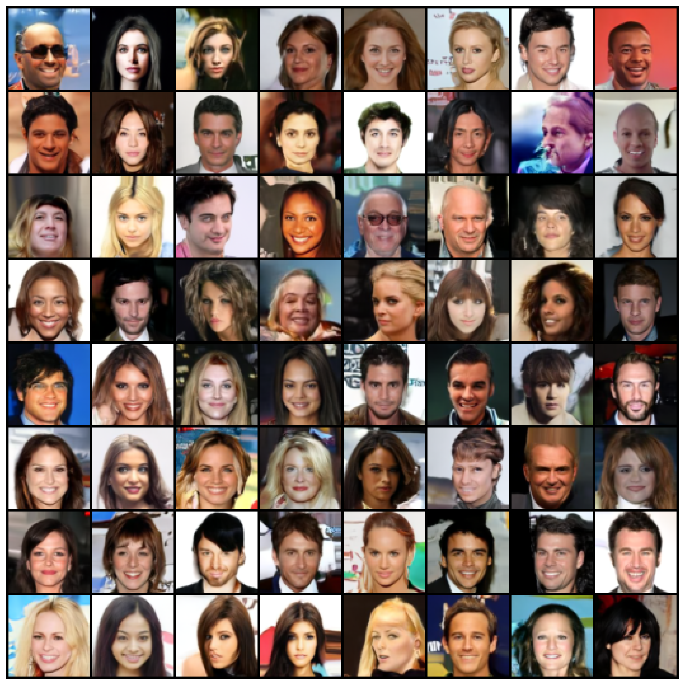
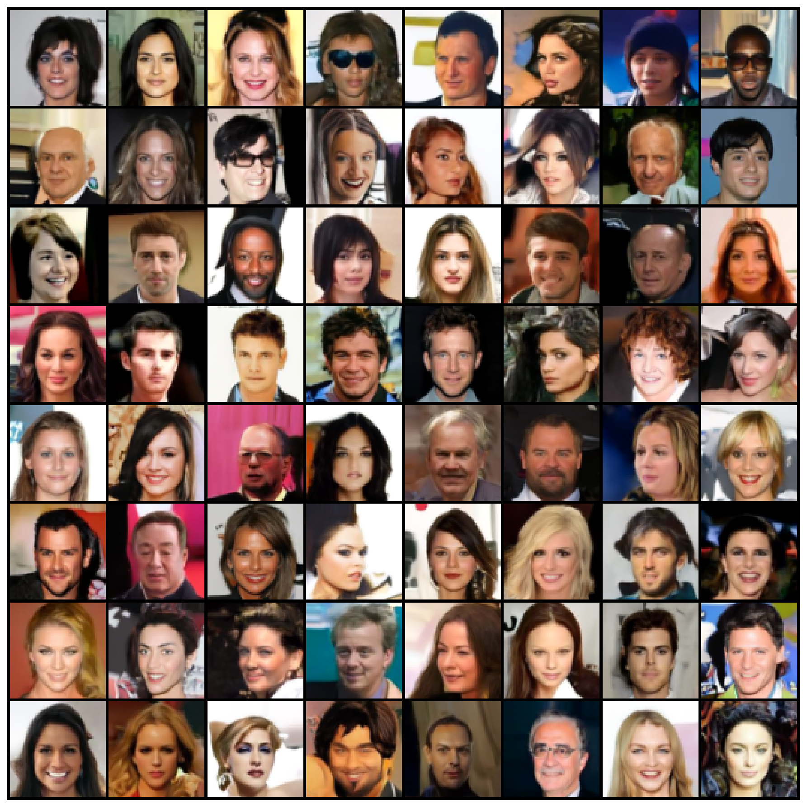
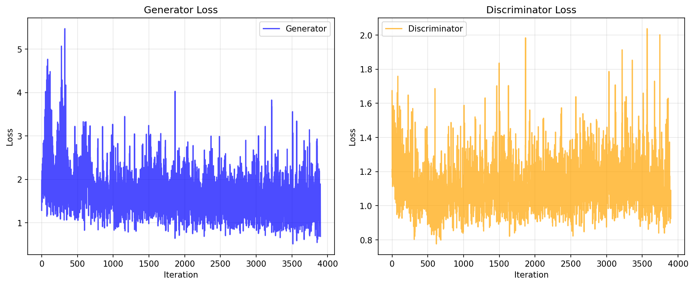
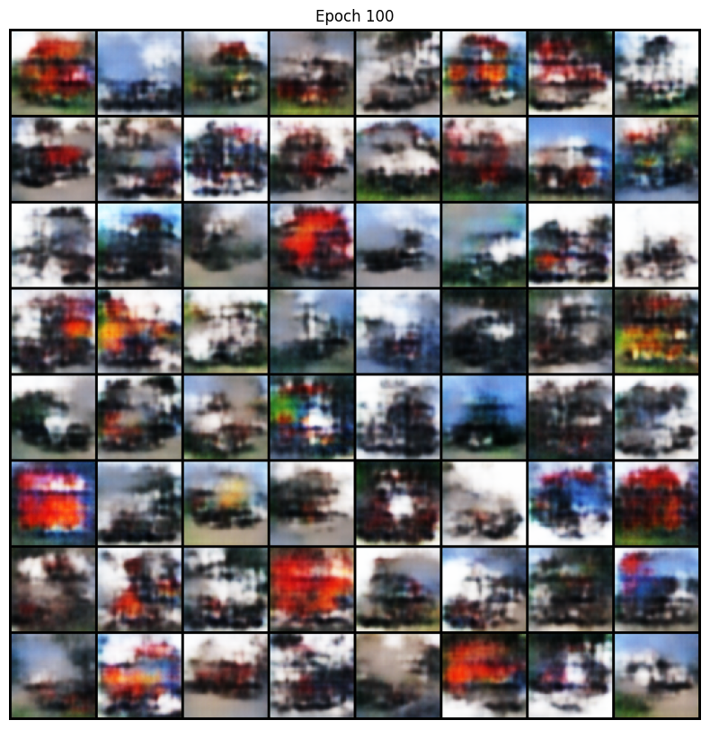
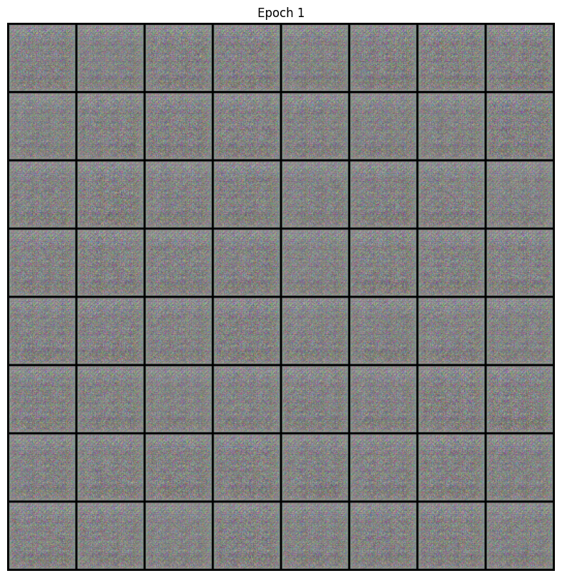
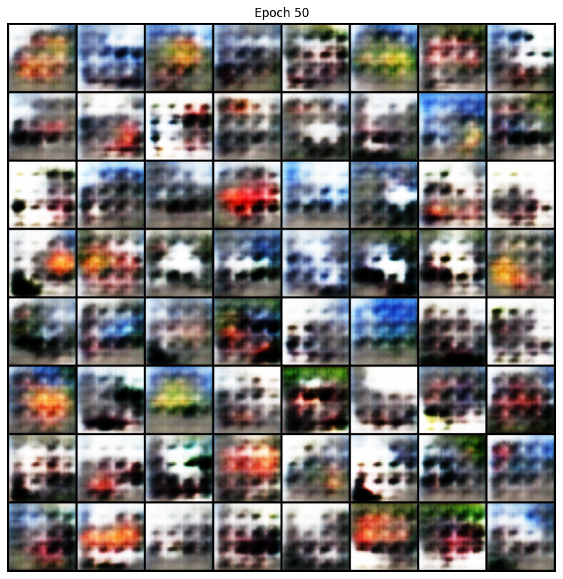

Denoising Diffusion Probabilistic Models on CelebA
This project uses DDPM (Denoising Diffusion Probabilistic Model) to generate realistic human face images. Unlike GANs which use adversarial training, DDPM works by learning to reverse a gradual noising process: starting from pure random noise, the model iteratively removes noise step by step until a clear image emerges.
The model was trained on the CelebA dataset (162,770 celebrity face images) at 64×64 resolution, using a U-Net architecture with ~22 million parameters and EMA (Exponential Moving Average) for improved generation quality.
Gradually add Gaussian noise to a real image over 1000 timesteps until it becomes pure random noise. This process is fixed and requires no learning.
Real Image → Slightly Noisy → ... → Pure Noise
A U-Net neural network learns to predict and remove noise at each timestep. During generation, start from pure noise and denoise 1000 times to produce a clean image.
Pure Noise → Less Noisy → ... → Generated Image
Controls the noise level at each timestep. Beta increases linearly from 0.0001 to 0.02 over 1000 steps, ensuring smooth and gradual noise addition.
Encoder-decoder structure with skip connections. Uses 128 base channels, attention at 16×16 resolution, and 2 residual blocks per level.
Maintains a smoothed copy of model weights (decay=0.9999) for generation, producing more stable and higher-quality samples.
Each denoising step receives a timestep embedding so the model knows which noise level it is currently removing. Uses sinusoidal positional encoding.
| Parameter | Value |
|---|---|
| Dataset | CelebA (162,770 images) |
| Image Size | 64 × 64 × 3 (RGB) |
| Batch Size | 64 |
| Learning Rate | 2e-4 (Adam) |
| Epochs | 60 |
| Timesteps | 1000 |
| Beta Schedule | Linear (1e-4 → 0.02) |
| Model Channels | 128 |
| Channel Multipliers | (1, 2, 2, 2) |
| Attention Resolution | 16 × 16 |
| Residual Blocks | 2 per level |
| Dropout | 0.1 |
| EMA Decay | 0.9999 |
| Parameters | 22,199,683 (~22M) |
| Device | Apple MPS (M-series GPU) |
| Total Training Time | ~60 hours (60 epochs × ~1 hr/epoch) |

Epoch 5 — Color blobs

Epoch 25 — Faces emerge

Epoch 50 — Clear details

Epoch 60 — Final result
| Epoch | Loss | Change |
|---|---|---|
| 2 | 0.01972 | Baseline |
| 25 | 0.01660 | -15.8% |
| 33 (Best) | 0.01564 | -20.7% |
| 55 | 0.01631 | Stabilized |
| 60 | 0.01630 | Stabilized |
64 generated face images using EMA model weights (Epoch 60)
In a previous project, I trained a DCGAN on CIFAR-10 (truck class) at 64×64 resolution. Here I compare the two generative approaches side by side.
| Parameter | GAN (DCGAN) | DDPM |
|---|---|---|
| Architecture | Generator + Discriminator | U-Net |
| Dataset | CIFAR-10 (Trucks) | CelebA (Faces) |
| Image Size | 64 × 64 | 64 × 64 |
| Batch Size | 128 | 64 |
| Learning Rate | 0.0001 | 0.0002 |
| Epochs | 100 | 60 |
| Parameters | ~5M | ~22M |
| Time per Epoch | ~3 minutes | ~60 minutes |
| Generation Speed | Instant (1 pass) | ~7 min (1000 steps) |

GAN: Generator (blue) vs Discriminator (orange) — adversarial tension
DDPM Loss Curve
Single MSE loss — steadily decreasing
0.0197 (Ep 2) → 0.0166 (Ep 25) → 0.0156 (Ep 33) → 0.0163 (Ep 60)
DDPM: Smooth convergence, best loss at Epoch 33

GAN (Epoch 100) — CIFAR-10 Trucks
DDPM (Epoch 60) — CelebA Faces
GAN (CIFAR-10 Trucks)

Epoch 1

Epoch 50
Epoch 100
DDPM (CelebA Faces)
Epoch 5
Epoch 25
Epoch 60
DDPM Wins
Stable training with no collapse or balancing issues
DDPM Wins
Clearer details, better facial features and diversity
GAN Wins
Instant generation vs 7 minutes per batch
The two models used different datasets (CIFAR-10 trucks vs CelebA faces), so the comparison is not entirely apples-to-apples. The lower visual quality of GAN outputs is partly due to the inherently low resolution of CIFAR-10 (originally 32×32). A fairer comparison would require training both models on the same dataset.
DDPM trades speed for quality and stability. It uses a larger model and slower generation process, but in return provides much more stable training and higher-quality, more diverse outputs. For applications where generation speed is not critical, diffusion models are a strong choice.